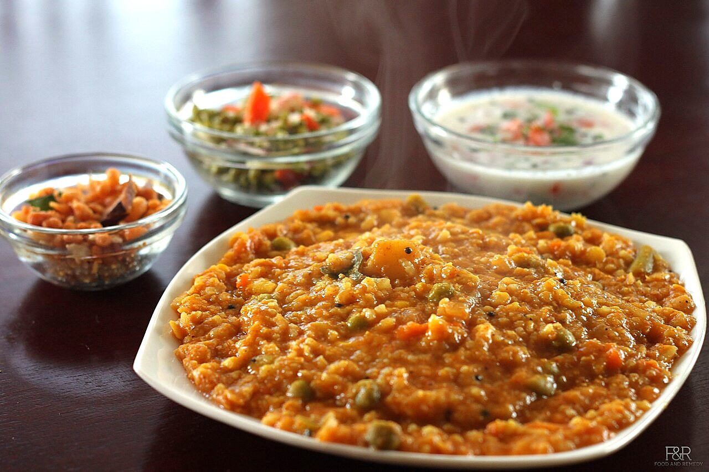
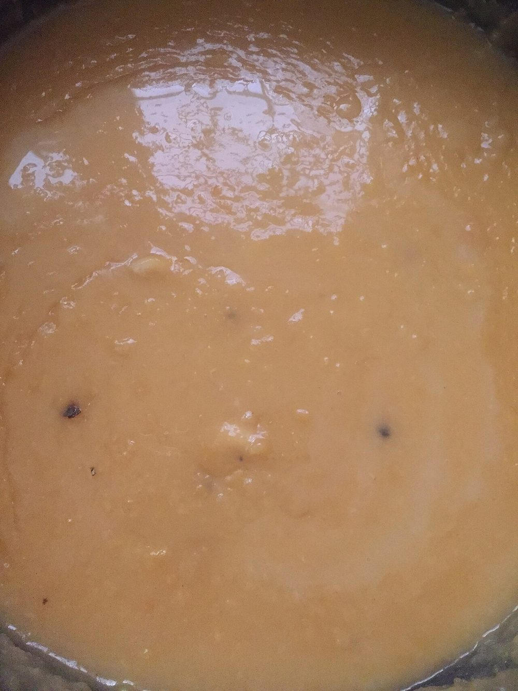
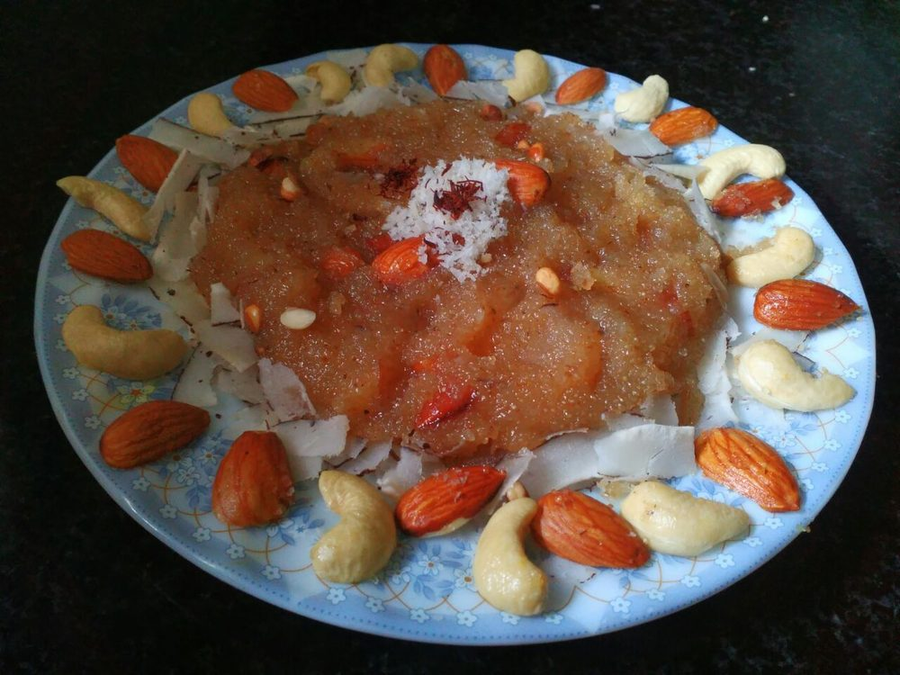
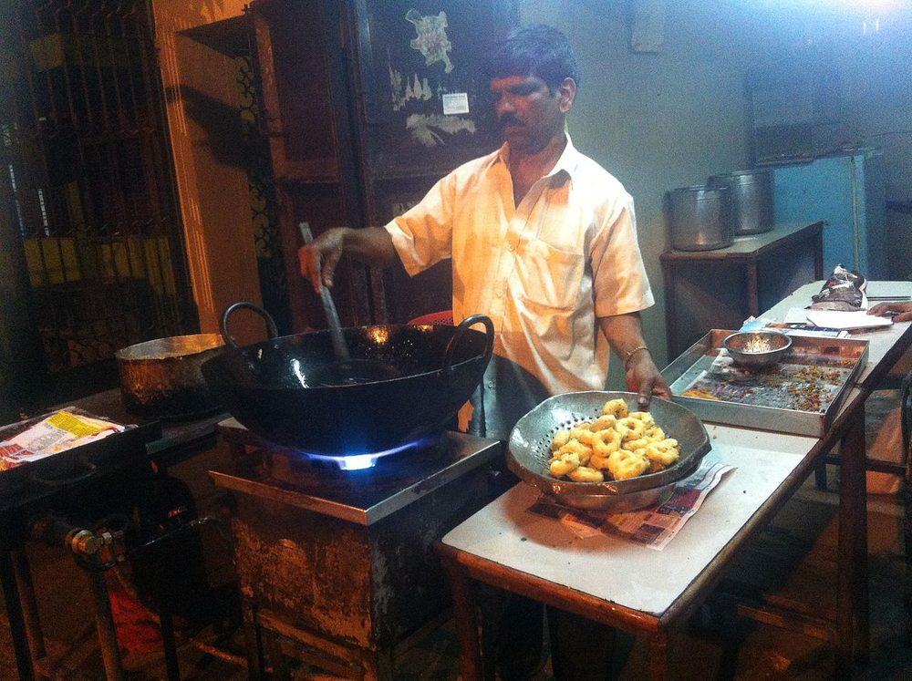
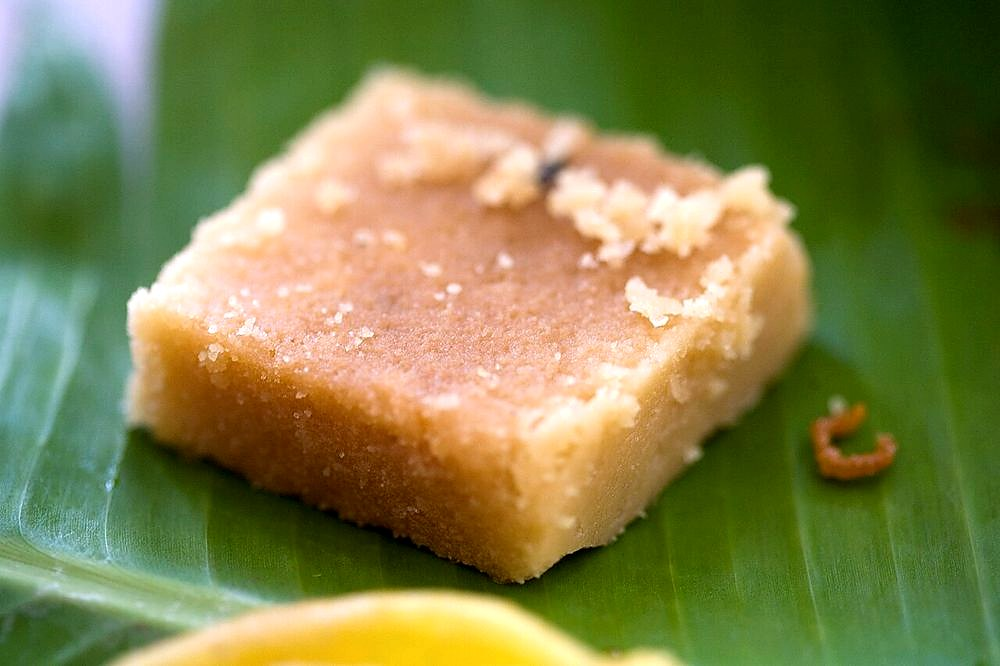

South India
Karnataka Cuisine
Three kitchens under one name: millet in the dry interior, coconut and fish on the coast, and the temple cooking that put the dosa on every high street in India.
Three kitchens under one name: millet in the dry interior, coconut and fish on the coast, and the temple cooking that put the dosa on every high street in India.
The state that exists today was assembled in 1956 out of territory that had been Mysore princely state, Bombay Presidency, Madras Presidency, the Nizam's Hyderabad and the Coorg province1. The kitchens never merged. Southern Karnataka, the old Mysore heartland around Mandya, Hassan and Bengaluru, eats finger millet and rice with mild coconut-and-dal gravies. North Karnataka (Vijayapura, Bagalkot, Dharwad, Kalaburagi) is a jowar belt that cooks with groundnut, dry chilli and sesame and looks far more like the Maharashtrian Deccan than like Mysore. The coastal strip, Udupi and Dakshina Kannada, is a wet, coconut-heavy seafood country with its own languages.
Kannada's own vocabulary for the table maps those differences precisely. Saaru is the thin peppery broth that elsewhere is rasam; huli is the thicker tamarind-and-dal stew that elsewhere is sambar; palya is a dry vegetable stir-fry; bath covers the one-pot rice dishes. The same four words appear across the state, but a Dharwad saaru and a Udupi saaru share almost nothing beyond the name.
Udupi's Krishna Matha was founded by the philosopher Madhvacharya in the thirteenth century2, and the eight monasteries around it (the Ashta Mathas) take turns running the temple in a rotation handed over at the Paryaya festival every two years. Feeding pilgrims at that scale, every day, under strict sattvic rules that bar onion and garlic, forced the temple cooks into genuine invention. The Shivalli Brahmin families who staffed those kitchens built a repertoire of rice-and-lentil batters, coconut-ground gravies and vegetable dishes that could be cooked in volume, served fast and eaten by anyone.
From the late nineteenth century those families began leaving for Bombay and Madras, where they opened cheap, clean, vegetarian eating houses. The Udupi hotel became a category of its own: marble tables, a menu of idli, vada, dosa and coffee, and food that observant customers of any caste could eat without anxiety. Chains like Woodlands and Dasaprakash carried the format nationwide, and by the middle of the twentieth century the dosa had stopped being a regional dish and become the default Indian breakfast in cities that had never heard of Udupi. Mysore added its own version. The masala dosa smeared inside with red chilli-garlic chutney.
Restaurant Karnataka runs on rice; much of the countryside runs on millet. Across the dry southern maidan, the staple is ragi (finger millet) cooked into ragi mudde, dense balls swallowed whole, with a bowl of soppu saaru, bassaru or country chicken curry alongside. Ragi grows on poor soil with unreliable rain, keeps well, and delivers far more calcium and iron than polished rice. Karnataka still grows more of it than any other Indian state.
North of the Krishna, the grain changes to jowar. Jolada rotti, a thin unleavened sorghum bread dry-toasted until it puffs and then stacked to go stiff, is the daily bread of Vijayapura and Bagalkot, eaten with stuffed brinjal, jhunka and fierce chutney powders ground from dry chilli, garlic and groundnut. Rice-flour akki rotti, patted straight onto the tawa with onion and dill, sits between the two. Millet was called poor-man's food for most of the twentieth century and pushed aside by subsidised rice; the last decade has reversed the snobbery entirely, and ragi and jowar now sell at a premium in the same cities that dropped them.
Dakshina Kannada cooks in at least three traditions at once. The Tulu-speaking Bunts gave the coast kori rotti, a fiery chicken curry poured over brittle rice wafers that soften as you eat them. The Konkani-speaking Gowd Saraswat Brahmins, a fish-eating Brahmin community, contributed the gentler coconut-and-tamarind curries. Mangalorean Catholics, descended from Goan converts who moved south in the sixteenth and seventeenth centuries and survived captivity at Seringapatam under Tipu Sultan, brought pork, vinegar and the bafat masala. The unifying ingredients are coconut in every form and the Byadgi chilli, grown inland in Haveri, which stains a gravy deep red without much heat. The reason Kundapur ghee roast looks far angrier than it tastes.
Inland and up, Kodagu, Coorg, is a different country again: a hill district of coffee, cardamom and black pepper, and the home of the Kodavas, a martial, ancestor-venerating community with no dietary restrictions to speak of. Their central dish is pandi curry, pork cooked black with coarse pepper and soured with kachampuli, a thick dark reduction of Malabar tamarind that no other Indian cuisine uses. It is eaten with steamed rice dumplings, kadambuttu, or with otti, a flat rice bread. Coorg cooking is the least exported of Karnataka's kitchens and the least changed.


 Akki Rotti
Akki Rotti
 Badanekayi Ennegayi
Badanekayi Ennegayi
 Baimbale Curry
Baimbale Curry

Bisi Bele Bath Chana Gashi
Chana Gashi
 Chekke Curry
Chekke Curry
 Dali Thoy
Dali Thoy
 Goli Baje
Goli Baje

Halbai
Hesarubele Payasa Jolada Rotti
Jolada Rotti
 Kadambuttu
Kadambuttu
 Kane Rava Fry
Kane Rava Fry
 Kesari Bath
Kesari Bath
 Koli Curry
Koli Curry
 Koli Saaru
Koli Saaru
 Kori Rotti
Kori Rotti
 Kosambari
Kosambari
 Kumm Curry
Kumm Curry
 Kundapur Chicken Ghee Roast
Kundapur Chicken Ghee Roast

Maddur Vada Majjige Huli
Majjige Huli
 Mangalore Buns
Mangalore Buns
 Meen Gassi
Meen Gassi

Mysore PakNeer Dosa
 Otti
Otti
 Pandi Curry
Pandi Curry
 Pork Bafat
Pork Bafat
 Pundi Gatti
Ragi Mudde
Pundi Gatti
Ragi Mudde
 Thambuttu
Thambuttu
 Vangi Bath
Vangi Bath
Not cooking tonight?
Tell us what is in your kitchen, and Khaana will help you cook an authentic Indian meal.